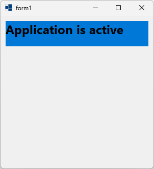
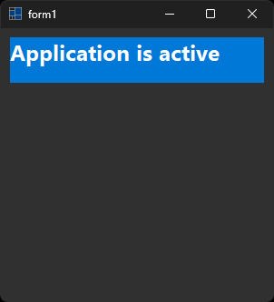
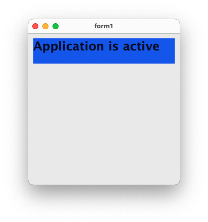
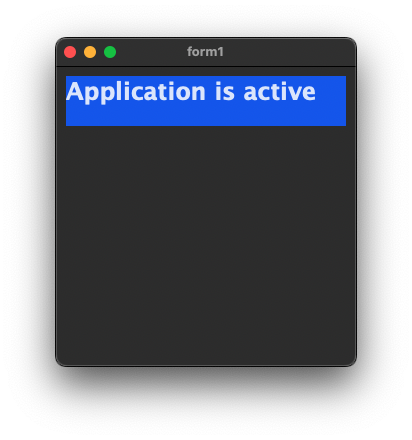
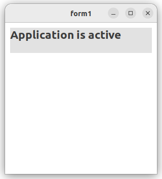
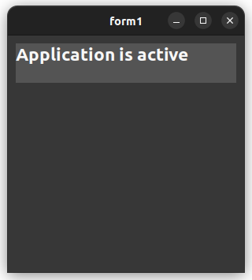

|
xtd
0.2.0
|
Loading...
Searching...
No Matches
wnd_proc.cpp
demonstrates the use of wnd_proc method.
- Windows
- 

- macOS
- 

- Gnome
- 

#include <xtd/drawing/system_brushes>
#include <xtd/forms/application>
#include <xtd/forms/form>
using namespace xtd;
using namespace xtd::drawing;
using namespace xtd::forms;
namespace wnd_proc_example {
public:
form1() {
client_size({300, 300});
text("form1");
}
protected:
form::on_paint(e);
// Paint a string in different styles depending on whether the application is active.
if (app_active) {
e.graphics().fill_rectangle(system_brushes::menu_highlight(), 10, 10, 280, 50);
e.graphics().draw_string("Application is active", font(), system_brushes::control_text(), 10, 10);
} else {
e.graphics().fill_rectangle(system_brushes::control(), 10, 10, 280, 50);
e.graphics().draw_string("Application is inactive", font(), system_brushes::control_text(), 10, 10);
}
}
// Listen for operating system messages.
switch (m.msg()) {
// The WM_ACTIVATEAPP message occurs when the application becomes the active application or becomes inactive.
case WM_ACTIVATEAPP:
// The wparam value identifies what is occurring.
app_active = (as<int>(m.wparam()) != 0);
// Invalidate to get new text painted.
invalidate();
break;
}
form::wnd_proc(m);
}
private:
bool app_active = true;
};
}
auto main()->int {
application::run(wnd_proc_example::form1 {});
}
Defines a particular format for text, including font face, size, and style attributes....
Definition font.h:45
drawing::font_family font_family() const noexcept
Gets the xtd::drawing::font_family associated with this xtd::drawing::font.
Represents a window or dialog box that makes up an application's user interface.
Definition form.h:52
Provides data for the xtd::forms::control::paint event.
Definition paint_event_args.h:28
The xtd::drawing namespace provides access to GDI+ basic graphics functionality. More advanced functi...
Definition actions_system_images.h:11
The xtd::forms namespace contains classes for creating Windows-based applications that take full adva...
Definition xtd_about_box.h:12
The xtd namespace contains all fundamental classes to access Hardware, Os, System,...
Definition xtd_about_box.h:10
Generated on Sat Mar 2 2024 20:38:31 for xtd by Gammasoft. All rights reserved.